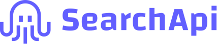

```{=html}
<section id="crawler-high-level" aria-label="YouTube topic crawler workflow">
  <svg class="icon-defs" aria-hidden="true">
    <symbol id="icon-query" viewBox="0 0 24 24">
      <path d="M4 6h8M4 12h6M4 18h5" />
      <circle cx="16" cy="12" r="4" />
      <path d="m19 15 3 3" />
    </symbol>
    <symbol id="icon-channel" viewBox="0 0 24 24">
      <circle cx="9" cy="8" r="3" />
      <path d="M3 20c0-4 2.7-6 6-6s6 2 6 6" />
      <circle cx="17" cy="9" r="2" />
      <path d="M16 14c3 0 5 1.8 5 5" />
    </symbol>
    <symbol id="icon-video" viewBox="0 0 24 24">
      <rect x="3" y="5" width="18" height="14" rx="2" />
      <path d="m10 9 5 3-5 3Z" />
    </symbol>
    <symbol id="icon-transcript" viewBox="0 0 24 24">
      <path d="M6 3h9l3 3v15H6Z" />
      <path d="M15 3v4h4M9 11h6M9 15h6" />
    </symbol>
    <symbol id="icon-decision" viewBox="0 0 24 24">
      <path d="M12 3v6M12 9l-5 5M12 9l5 5" />
      <circle cx="7" cy="17" r="3" />
      <circle cx="17" cy="17" r="3" />
      <path d="m5.8 17 1 1 1.8-2M15.8 15.8l2.4 2.4M18.2 15.8l-2.4 2.4" />
    </symbol>
    <symbol id="icon-approved" viewBox="0 0 24 24">
      <rect x="2.5" y="5" width="14" height="13" rx="2" />
      <path d="m8 9 4 2.5L8 14Z" />
      <circle cx="18" cy="17" r="4" />
      <path d="m16.2 17 1.2 1.2 2.4-2.6" />
    </symbol>
    <symbol id="icon-end" viewBox="0 0 24 24">
      <circle cx="12" cy="12" r="9" />
      <rect x="8.5" y="8.5" width="7" height="7" rx="1" />
    </symbol>
  </svg>


  <div class="crawler-controls" hidden>
    <div class="transport" role="group" aria-label="Walkthrough playback">
      <button type="button" data-action="play" aria-label="Play walkthrough">▶ <span>Play</span></button>
      <button type="button" data-action="next" aria-label="Next step">Step →</button>
      <button type="button" data-action="reset" aria-label="Clear simulation and restart" title="Clear queues and collection">↺</button>
    </div>
    <label class="scenario-label">Follow a video
      <select data-control="scenario" aria-label="Example video path">
        <option value="approved">Relevant video</option>
        <option value="date">Published too early</option>
        <option value="metadata">Off-topic metadata</option>
        <option value="rejected">Misleading title</option>
        <option value="missing">Empty transcript</option>
      </select>
    </label>
  </div>
  <div class="mobile-stages" role="group" aria-label="Explore a crawler stage" hidden>
    <button type="button" data-stage="0" aria-pressed="true">1 Discover</button>
    <button type="button" data-stage="1" aria-pressed="false">2 Screen</button>
    <button type="button" data-stage="2" aria-pressed="false">3 Read</button>
    <button type="button" data-stage="3" aria-pressed="false">4 Grow</button>
  </div>
  <div class="process">
  <span class="crawler-packet" aria-hidden="true" hidden></span>
  <div class="stage">
    <div class="stage-title">
      <span class="stage-number">1</span>
      <div><strong>Discover</strong></div>
    </div>
    <div class="flow flow-3">
      <div class="queue-stack">
        <button type="button" class="node queue-node" data-node="queries" aria-pressed="false" aria-controls="crawler-explanation">
          <svg aria-hidden="true"><use href="#icon-query" /></svg>
          <span class="node-copy"><strong>Query queue</strong><span class="text-small">Seeded from a user interview</span></span></button>
        <button type="button" class="node queue-node" data-node="channels" aria-pressed="false" aria-controls="crawler-explanation">
          <svg aria-hidden="true"><use href="#icon-channel" /></svg>
          <span class="node-copy"><strong>Channel queue</strong></span></button>
      </div>
      <div class="arrow" aria-hidden="true"></div>
      <button type="button" class="node search-node" data-node="search" aria-pressed="false" aria-controls="crawler-explanation">
        <span class="brand-icon searchapi-brand" aria-hidden="true"></span>
        <span class="node-copy"><strong>Fetch videos / channels</strong></span></button>
      <div class="arrow" aria-hidden="true"></div>
      <button type="button" class="node queue-node" data-node="candidates" aria-pressed="false" aria-controls="crawler-explanation">
        <svg aria-hidden="true"><use href="#icon-video" /></svg>
        <span class="node-copy"><strong>Video queue</strong></span></button>
    </div>
  </div>

  <div class="stage">
    <div class="stage-title">
      <span class="stage-number">2</span>
      <div><strong>Screen metadata</strong></div>
    </div>
    <div class="flow flow-4">
      <button type="button" class="node queue-node" data-node="video" aria-pressed="false" aria-controls="crawler-explanation">
        <svg aria-hidden="true"><use href="#icon-video" /></svg>
        <span class="node-copy"><strong>Video queue</strong></span></button>
      <div class="arrow" aria-hidden="true"></div>
      <button type="button" class="node search-node" data-node="details" aria-pressed="false" aria-controls="crawler-explanation">
        <span class="brand-icon searchapi-brand" aria-hidden="true"></span>
        <span class="node-copy"><strong>Fetch video details</strong></span></button>
      <div class="arrow gate-arrow" aria-label="Filter based on metadata"><span class="text-small">filter by metadata</span></div>
      <button type="button" class="node ai-node" data-node="metadata" aria-pressed="false" aria-controls="crawler-explanation">
        <span class="brand-icon openai-brand" aria-hidden="true"></span>
        <span class="node-copy"><strong>Metadata classification</strong><span class="text-small">GPT-5.6 Luna · metadata</span></span></button>
      <div class="arrow" aria-hidden="true"></div>
      <button type="button" class="node queue-node" data-node="pending" aria-pressed="false" aria-controls="crawler-explanation">
        <svg aria-hidden="true"><use href="#icon-transcript" /></svg>
        <span class="node-copy"><strong>Transcript queue</strong></span></button>
    </div>
  </div>

  <div class="stage">
    <div class="stage-title">
      <span class="stage-number">3</span>
      <div><strong>Classify transcript</strong></div>
    </div>
    <div class="flow flow-4">
      <button type="button" class="node queue-node" data-node="transcripts" aria-pressed="false" aria-controls="crawler-explanation">
        <svg aria-hidden="true"><use href="#icon-transcript" /></svg>
        <span class="node-copy"><strong>Transcript queue</strong></span></button>
      <div class="arrow" aria-hidden="true"></div>
      <button type="button" class="node search-node" data-node="fetch" aria-pressed="false" aria-controls="crawler-explanation">
        <span class="brand-icon searchapi-brand" aria-hidden="true"></span>
        <span class="node-copy"><strong>Fetch video transcript</strong></span></button>
      <div class="arrow" aria-hidden="true"></div>
      <button type="button" class="node ai-node" data-node="classify" aria-pressed="false" aria-controls="crawler-explanation">
        <span class="brand-icon openai-brand" aria-hidden="true"></span>
        <span class="node-copy"><strong>Final classification</strong><span class="text-small">GPT-5.6 Luna · transcript</span></span></button>
      <div class="arrow" aria-hidden="true"></div>
      <button type="button" class="node approved-node" data-node="approved" aria-pressed="false" aria-controls="crawler-explanation">
        <svg aria-hidden="true"><use href="#icon-approved" /></svg>
        <span class="node-copy"><strong>Approved videos</strong></span></button>
    </div>
  </div>

  <div class="stage stage-final">
    <div class="stage-title">
      <span class="stage-number">4</span>
      <div><strong>Store &amp; append to queues</strong></div>
    </div>
    <div class="flow flow-4 stage-four-flow">
      <button type="button" class="node approved-node" data-node="store" aria-pressed="false" aria-controls="crawler-explanation">
        <svg aria-hidden="true"><use href="#icon-approved" /></svg>
        <span class="node-copy"><strong>Save results</strong><span class="text-small">Decisions &amp; transcripts</span></span></button>
      <div class="arrow" aria-hidden="true"></div>
      <div class="queue-stack feedback-node">
        <button type="button" class="node queue-node" data-node="related" aria-pressed="false" aria-controls="crawler-explanation">
          <svg aria-hidden="true"><use href="#icon-video" /></svg>
          <span class="node-copy"><strong>Video queue</strong><span class="text-small">Recommended videos</span></span></button>
        <button type="button" class="node queue-node" data-node="creators" aria-pressed="false" aria-controls="crawler-explanation">
          <svg aria-hidden="true"><use href="#icon-channel" /></svg>
          <span class="node-copy"><strong>Channel queue</strong><span class="text-small">Creators · deduplicated</span></span></button>
      </div>
      <div class="arrow" aria-hidden="true"></div>
      <button type="button" class="node decision-node" data-node="limits" aria-pressed="false" aria-controls="crawler-explanation">
        <svg aria-hidden="true"><use href="#icon-decision" /></svg>
        <span class="node-copy"><strong>More eligible work &amp; budget?</strong><span class="no-outcome text-small">Yes: continue</span></span></button>
      <div class="arrow yes-arrow" aria-label="No"><span class="text-small">no</span></div>
      <button type="button" class="node end-node" data-node="end" aria-pressed="false" aria-controls="crawler-explanation">
        <svg aria-hidden="true"><use href="#icon-end" /></svg>
        <span class="node-copy"><strong>Crawl ends</strong></span></button>
    </div>
  </div>

  <div class="repeat-loop" aria-label="Return to the queues while eligible work and budget remain">
    <span class="repeat-line" aria-hidden="true"></span>
    <span class="repeat-return" aria-hidden="true"></span>
  </div>
  </div>

  <div class="crawler-inspector" hidden>
    <div class="inspector-copy">
    <div class="inspector-heading"><span class="step-count"></span><strong class="inspector-title">Small seeds, growing discovery</strong><span class="example-badge">Illustrative example</span></div>
    <p id="crawler-explanation" role="status" aria-live="polite" aria-atomic="true">Press Play to follow a video, or select any node to explore.</p>
    <div class="crawler-progress" role="group" aria-label="Jump to a walkthrough step"></div>
    </div>
    <div class="collection-tray" aria-label="Illustrative collected data">
      <div class="collection-label">EXAMPLE COLLECTION <span class="collection-round">Video 1</span></div>
      <div class="collection-counts"><span><b data-total="records">0</b> videos</span><span><b data-total="transcripts">0</b> transcripts</span><span><b data-total="approved">0</b> approved</span><span title="Rejected or unavailable; excludes videos still being reviewed"><b data-total="not-approved">0</b> not approved</span></div>
      <div class="collected-cards" aria-label="Collected video records"></div>
    </div>
  </div>
</section>

<style>
  #crawler-high-level {
    --font-size-base: 16px;
    --surface: transparent;
    --foreground: #15171c;
    --muted-foreground: #5f6876;
    --border: #d2d7df;
    --connector: #8993a1;
    --blue: #2563eb;
    --purple: #7652c7;
    --orange: #bd6418;
    --green: #18794e;
    --red: #b93838;
    position: relative;
    left: 50%;
    width: min(1240px, calc(100vw - 48px));
    max-width: none;
    margin: 1.5rem 0 2rem;
    padding: 22px;
    transform: translateX(-50%);
    background: var(--surface);
    border: 1px solid var(--border);
    color: var(--foreground);
    font-family: "Inter", -apple-system, BlinkMacSystemFont, "Segoe UI", sans-serif;
    font-size: var(--font-size-base);
    line-height: 1.45;
  }

  body.quarto-dark #crawler-high-level {
    --foreground: #e2e8f0;
    --muted-foreground: #94a3b8;
    --border: #334155;
    --connector: #64748b;
    --blue: #60a5fa;
    --purple: #a78bfa;
    --orange: #fb923c;
    --green: #34d399;
    --red: #fb9191;
  }

  #crawler-high-level,
  #crawler-high-level * {
    box-sizing: border-box;
  }

  #crawler-high-level .icon-defs {
    position: absolute;
    width: 0;
    height: 0;
    overflow: hidden;
  }

  #crawler-high-level .process {
    position: relative;
    padding: 0 14px 28px 28px;
  }

  #crawler-high-level .stage {
    display: grid;
    grid-template-columns: 120px minmax(0, 1fr);
    gap: 18px;
    align-items: center;
    min-height: 134px;
    padding: 18px 0;
    border-bottom: 1px solid var(--border);
  }

  #crawler-high-level .stage-final {
    border-bottom: 0;
  }

  #crawler-high-level .stage-title {
    display: grid;
    grid-template-columns: 18px minmax(0, 1fr);
    align-items: baseline;
    gap: 10px;
  }

  #crawler-high-level .stage-title strong,
  #crawler-high-level .stage-title span {
    display: block;
  }

  #crawler-high-level .stage-title strong,
  #crawler-high-level .node strong {
    font-weight: 500;
  }

  #crawler-high-level .stage-number {
    color: var(--muted-foreground);
    font-variant-numeric: tabular-nums;
  }

  #crawler-high-level .text-small {
    color: var(--muted-foreground);
    font-size: 0.82rem;
    line-height: 1.35;
  }

  #crawler-high-level .flow {
    display: grid;
    grid-template-columns:
      minmax(0, 0.9fr)
      20px
      minmax(0, 1fr)
      96px
      minmax(0, 1.4fr)
      20px
      minmax(0, 0.95fr);
    align-items: center;
    column-gap: 8px;
    min-width: 0;
  }

  #crawler-high-level .flow-3 > :nth-child(1) {
    grid-column: 1 / 4;
  }

  #crawler-high-level .flow-3 > :nth-child(2) {
    grid-column: 4;
  }

  #crawler-high-level .flow-3 > :nth-child(3) {
    grid-column: 5;
  }

  #crawler-high-level .flow-3 > :nth-child(4) {
    grid-column: 6;
  }

  #crawler-high-level .flow-3 > :nth-child(5) {
    grid-column: 7;
  }

  #crawler-high-level .flow-3 .queue-stack .text-small {
    max-width: 280px;
  }

  #crawler-high-level .stage-four-flow .no-outcome {
    margin-top: 4px;
    color: var(--green);
    font-weight: 500;
  }

  #crawler-high-level .node {
    display: flex;
    align-items: center;
    gap: 10px;
    min-width: 0;
  }

  #crawler-high-level .queue-stack {
    display: grid;
    gap: 10px;
    min-width: 0;
  }

  #crawler-high-level .node > .node-copy {
    min-width: 0;
  }

  #crawler-high-level .node strong,
  #crawler-high-level .node span {
    display: block;
    overflow-wrap: normal;
    word-break: normal;
  }

  #crawler-high-level .node > svg {
    width: 27px;
    height: 27px;
    flex: 0 0 27px;
    fill: none;
    stroke: currentColor;
    stroke-width: 1.7;
    stroke-linecap: round;
    stroke-linejoin: round;
  }

  #crawler-high-level .queue-node {
    color: var(--foreground);
  }

  #crawler-high-level .search-node {
    color: var(--blue);
  }

  #crawler-high-level .ai-node {
    color: var(--purple);
  }

  #crawler-high-level .decision-node {
    color: var(--orange);
  }

  #crawler-high-level .end-node {
    color: var(--foreground);
  }

  #crawler-high-level .approved-node,
  #crawler-high-level .feedback-node {
    color: var(--green);
  }

  #crawler-high-level .node strong {
    color: var(--foreground);
  }

  #crawler-high-level .brand-icon {
    display: block;
    width: 30px;
    height: 30px;
    flex: 0 0 30px;
    overflow: hidden;
  }

  #crawler-high-level .brand-icon img {
    display: block;
    max-width: none;
  }

  #crawler-high-level .searchapi-brand img {
    width: auto;
    height: 28px;
  }

  #crawler-high-level .openai-brand img {
    width: 28px;
    height: 28px;
  }

  #crawler-high-level .arrow {
    position: relative;
    height: 16px;
    color: var(--connector);
  }

  #crawler-high-level .arrow::before {
    content: "";
    position: absolute;
    left: 0;
    right: 5px;
    top: 8px;
    border-top: 2px solid currentColor;
  }

  #crawler-high-level .arrow::after {
    content: "";
    position: absolute;
    right: 0;
    top: 5px;
    width: 6px;
    height: 6px;
    border-top: 2px solid currentColor;
    border-right: 2px solid currentColor;
    transform: rotate(45deg);
  }

  #crawler-high-level .arrow span {
    position: absolute;
    left: 50%;
    bottom: 11px;
    transform: translateX(-50%);
    white-space: nowrap;
  }

  #crawler-high-level .repeat-loop {
    position: absolute;
    inset: 0;
    pointer-events: none;
    color: var(--green);
  }

  #crawler-high-level .repeat-loop .repeat-line {
    position: absolute;
    top: 67px;
    right: 27%;
    bottom: 10px;
    left: 0;
    border-bottom: 2px solid currentColor;
    border-left: 2px solid currentColor;
    border-radius: 0 0 12px 12px;
  }

  #crawler-high-level .repeat-loop .repeat-return {
    position: absolute;
    top: 67px;
    left: 0;
    width: 24px;
    border-top: 2px solid currentColor;
  }

  #crawler-high-level .repeat-loop .repeat-return::after {
    content: "";
    position: absolute;
    right: 0;
    top: -4px;
    width: 7px;
    height: 7px;
    border-top: 2px solid currentColor;
    border-right: 2px solid currentColor;
    transform: rotate(45deg);
  }

  #crawler-high-level .repeat-loop .repeat-line::after {
    content: "";
    position: absolute;
    right: 0;
    bottom: 0;
    height: 74px;
    border-right: 2px solid currentColor;
  }

  @media (max-width: 980px) {
    #crawler-high-level .stage {
      grid-template-columns: 1fr;
      gap: 12px;
      min-height: 0;
      padding: 22px 0;
    }

    #crawler-high-level .process {
      padding-right: 10px;
      padding-left: 24px;
    }

    #crawler-high-level .flow-3,
    #crawler-high-level .flow-4 {
      grid-template-columns: 1fr;
      gap: 8px;
    }

    #crawler-high-level .flow > * {
      grid-column: 1 !important;
      justify-self: stretch;
    }

    #crawler-high-level .repeat-loop .repeat-line {
      right: 0;
    }

    #crawler-high-level .repeat-loop .repeat-line::after {
      height: 18px;
    }

    #crawler-high-level .node {
      min-height: 34px;
    }

    #crawler-high-level .arrow {
      width: 20px;
      height: 22px;
      margin-left: 4px;
      transform: rotate(90deg);
      transform-origin: center;
    }

    #crawler-high-level .arrow span {
      display: none;
    }
  }

  @media (max-width: 600px) {
    #crawler-high-level {
      width: calc(100vw - 24px);
      padding: 18px;
    }
  }
  /* Reserve room for the controls and explanation inside the original footprint. */
  #crawler-high-level { border-radius: 14px; padding: 16px 22px; }
  #crawler-high-level button, #crawler-high-level select { font: inherit; }
  #crawler-high-level [hidden] { display: none !important; }
  #crawler-high-level .node {
    appearance: none; border: 1px solid transparent; border-radius: 9px;
    background: transparent; text-align: left; padding: 7px; margin: -7px;
    width: calc(100% + 14px); font-size: 16px; line-height: 1.4;
    cursor: pointer; transition: background .2s, border-color .2s, box-shadow .2s;
  }
  #crawler-high-level .node:hover { background: color-mix(in srgb, var(--foreground) 5%, transparent); }
  #crawler-high-level button:focus-visible, #crawler-high-level select:focus-visible {
    outline: 2px solid var(--blue); outline-offset: 4px;
  }
  #crawler-high-level .node { position: relative; }
  #crawler-high-level .node[data-verdict]::after { content: attr(data-verdict); position: absolute; right: 4px; top: -13px; padding: 2px 6px; border: 1px solid currentColor; background: var(--bs-body-bg, var(--page-background, #fff)); color: var(--accent); font-size: 10px; line-height: 1.3; border-radius: 4px; }
  #crawler-high-level .node.is-active {
    background: color-mix(in srgb, var(--accent) 9%, transparent);
    border-color: color-mix(in srgb, var(--accent) 50%, transparent);
    box-shadow: 0 0 0 3px color-mix(in srgb, var(--accent) 5%, transparent);
  }
  #crawler-high-level .node.is-visited > :first-child { opacity: .65; }
  #crawler-high-level .node.is-active > :first-child { opacity: 1; }
  #crawler-high-level.is-enhanced .stage { min-height: 110px; padding: 12px 0; }
  #crawler-high-level .stage.is-current .stage-number {
    color: var(--accent); background: color-mix(in srgb, var(--accent) 12%, transparent);
    border-radius: 50%; box-shadow: 0 0 0 5px color-mix(in srgb, var(--accent) 12%, transparent);
  }
  #crawler-high-level .arrow.is-current-path { color: var(--accent); }
  #crawler-high-level .process { padding-bottom: 20px; }
  #crawler-high-level .repeat-loop { opacity: .35; transition: opacity .3s; }
  #crawler-high-level.is-looping .repeat-loop { opacity: 1; }
  #crawler-high-level .repeat-loop .repeat-line, #crawler-high-level .repeat-loop .repeat-return { top: 55px; }
  #crawler-high-level .repeat-loop .repeat-line::after { height: 60px; }
  #crawler-high-level .crawler-controls { display: flex; align-items: center; gap: 18px; padding: 0 0 12px; border-bottom: 1px solid var(--border); font-size: 12px; }
  #crawler-high-level .transport { display: flex; align-items: center; gap: 4px; margin-right: auto; }
  #crawler-high-level .transport button {
    color: var(--foreground); background: transparent; border: 1px solid var(--border);
    border-radius: 6px; padding: 5px 10px; min-height: 32px; cursor: pointer; white-space: nowrap;
  }
  #crawler-high-level .transport [data-action="play"] { background: var(--foreground); color: var(--page-background, #fff); border-color: var(--foreground); min-width: 78px; }
  body.quarto-dark #crawler-high-level { --page-background: #15171c; }
  #crawler-high-level .transport button:hover { opacity: .75; }
  #crawler-high-level .crawler-controls label { display: flex; align-items: center; gap: 8px; color: var(--muted-foreground); white-space: nowrap; }
  #crawler-high-level select { color: var(--foreground); background: transparent; border: 1px solid var(--border); border-radius: 6px; padding: 5px 6px; min-height: 32px; }
  #crawler-high-level option { background: var(--page-background, #fff); color: var(--foreground); }
  #crawler-high-level .crawler-inspector { padding: 11px 0 0; border-top: 1px solid var(--border); min-height: 94px; }
  #crawler-high-level .inspector-heading { display: flex; align-items: center; gap: 10px; font-size: 13px; }
  #crawler-high-level .inspector-title { font-weight: 600; color: var(--accent); }
  #crawler-high-level .step-count { font-variant-numeric: tabular-nums; color: var(--muted-foreground); font-size: 11px; }
  #crawler-high-level .example-badge { margin-left: auto; font-size: 10px; color: var(--muted-foreground); letter-spacing: .02em; }
  #crawler-high-level #crawler-explanation { font-size: 13px; line-height: 1.5; margin: 6px 0 9px; min-height: 39px; color: var(--muted-foreground); }
  #crawler-high-level .crawler-progress { display: flex; gap: 5px; }
  #crawler-high-level .crawler-progress button { flex: 1; height: 12px; padding: 4px 0; border: 0; background: transparent; cursor: pointer; }
  #crawler-high-level .crawler-progress button::before { content: ""; display: block; height: 3px; border-radius: 2px; background: var(--border); }
  #crawler-high-level .crawler-progress button.is-past::before { background: color-mix(in srgb, var(--accent) 45%, var(--border)); }
  #crawler-high-level .crawler-progress button[aria-pressed="true"]::before { background: var(--accent); }
  #crawler-high-level .crawler-packet { position: absolute; top: 0; left: 0; width: 8px; height: 8px; border-radius: 50%; background: var(--accent); box-shadow: 0 0 0 4px color-mix(in srgb, var(--accent) 15%, transparent), 0 0 14px var(--accent); pointer-events: none; z-index: 2; }
  @media (min-width: 981px) {
    #crawler-high-level.is-enhanced { height: 626px; display: flex; flex-direction: column; }
    #crawler-high-level .crawler-controls, #crawler-high-level .crawler-inspector { flex: 0 0 auto; }
    #crawler-high-level.is-enhanced .process { flex: 1; min-height: 0; display: grid; grid-template-rows: repeat(3, minmax(0, 1fr)) 138px; }
    #crawler-high-level.is-enhanced .stage { min-height: 0; padding: 8px 0; }
    #crawler-high-level .crawler-inspector { height: 98px; }
  }
  @media (min-width: 981px) and (max-width: 1120px) {
    #crawler-high-level .stage { grid-template-columns: 108px minmax(0, 1fr); gap: 12px; }
    #crawler-high-level .flow { column-gap: 6px; grid-template-columns: minmax(0,.85fr) 12px minmax(0,1fr) 65px minmax(0,1.4fr) 12px minmax(0,.9fr); }
    #crawler-high-level .node { font-size: 14px; gap: 6px; }
    #crawler-high-level .text-small { font-size: 11px; }
  }
  @media (max-width: 980px) {
    #crawler-high-level.is-enhanced .stage { min-height: 0; padding: 22px 0; }
    #crawler-high-level .crawler-controls { flex-wrap: wrap; gap: 10px; }
    #crawler-high-level .crawler-controls label { font-size: 11px; }
    #crawler-high-level .repeat-loop .repeat-line::after { height: 18px; }
    #crawler-high-level .crawler-inspector { min-height: 130px; }
    #crawler-high-level .inspector-heading { flex-wrap: wrap; gap: 6px; }
    #crawler-high-level .example-badge { display: none; }
  }
  @media (max-width: 600px) {
    #crawler-high-level { padding: 16px 18px; }
    #crawler-high-level .transport { flex-basis: 100%; }
    #crawler-high-level .scenario-label { flex: 1; }
    #crawler-high-level .crawler-controls { gap: 8px; }
    #crawler-high-level .crawler-controls label { gap: 4px; }
    #crawler-high-level .crawler-controls select { max-width: 148px; }
    #crawler-high-level .node { min-height: 40px; }
  }
  @media (prefers-reduced-motion: reduce) {
    #crawler-high-level *, #crawler-high-level *::before { animation: none !important; transition: none !important; }
    #crawler-high-level .crawler-packet { display: none !important; }
  }
  @media print {
    #crawler-high-level .crawler-controls, #crawler-high-level .crawler-inspector, #crawler-high-level .crawler-packet { display: none !important; }
    #crawler-high-level .node { border-color: transparent !important; background: transparent !important; box-shadow: none !important; }
  }

  #crawler-high-level .mobile-stages { display: none; }
  #crawler-high-level .crawler-inspector { display: grid; grid-template-columns: minmax(0,1fr) 240px; gap: 22px; }
  #crawler-high-level .inspector-copy { min-width: 0; }
  #crawler-high-level .example-badge { display: none; }
  #crawler-high-level #crawler-explanation { font-size: 14px; min-height: 42px; }
  #crawler-high-level .collection-tray { border-left: 1px solid var(--border); padding-left: 18px; }
  #crawler-high-level .collection-label { display: flex; justify-content: space-between; color: var(--muted-foreground); font-size: 9px; letter-spacing: .06em; }
  #crawler-high-level .collection-round { letter-spacing: 0; }
  #crawler-high-level .collection-counts { display: flex; gap: 10px; margin-top: 7px; color: var(--muted-foreground); font-size: 10px; }
  #crawler-high-level .collection-counts b { font-size: 16px; color: var(--foreground); font-variant-numeric: tabular-nums; }
  #crawler-high-level [data-total="approved"] { color: var(--green); }
  #crawler-high-level [data-total="not-approved"] { color: var(--red); }
  #crawler-high-level .collected-cards { display: flex; align-items: center; gap: 5px; min-height: 35px; margin-top: 6px; }
  #crawler-high-level .record-card { position: relative; display: block; width: 19px; height: 24px; border: 1px solid var(--blue); border-radius: 2px; background: color-mix(in srgb, var(--blue) 8%, transparent); }
  #crawler-high-level .record-card::before { content: ''; position: absolute; inset: 5px 3px; background: repeating-linear-gradient(to bottom, var(--blue) 0 1px, transparent 1px 4px); opacity: .6; }
  #crawler-high-level .record-card.has-transcript { box-shadow: 3px 3px 0 color-mix(in srgb, var(--purple) 40%, transparent); }
  #crawler-high-level .record-card.is-approved::after { content: '✓'; position: absolute; right: -4px; bottom: -4px; color: var(--green); background: var(--bs-body-bg, var(--page-background,#fff)); font-size: 11px; line-height: 1; }
  #crawler-high-level .record-card.is-rejected { border-color: var(--red); opacity: .65; }
  #crawler-high-level .record-overflow { color: var(--muted-foreground); font-size: 10px; }
  #crawler-high-level .collection-empty { color: var(--muted-foreground); font-size: 11px; }
  #crawler-high-level .queue-chip { position: absolute; right: -2px; top: -10px; display: flex !important; align-items: center; gap: 4px; pointer-events: none; }
  #crawler-high-level .queue-count { min-width: 19px; padding: 0 4px; border: 1px solid var(--border); border-radius: 4px; color: var(--blue); background: var(--bs-body-bg, var(--page-background,#fff)); font-size: 11px; line-height: 17px; font-variant-numeric: tabular-nums; text-align: center; }
  #crawler-high-level .queue-pips { display: flex !important; gap: 2px; }
  #crawler-high-level .queue-pips i { display: block; width: 3px; height: 10px; background: var(--blue); opacity: .5; }
  @media (min-width: 981px) {
    #crawler-high-level.is-enhanced .process { grid-template-rows: repeat(3,minmax(0,1fr)) 128px; }
    #crawler-high-level .crawler-inspector { height: 120px; }
  }
  @media (max-width: 980px) {
    #crawler-high-level.is-enhanced { padding: 12px 14px; }
    #crawler-high-level.is-enhanced .mobile-stages { display: grid; grid-template-columns: repeat(4,minmax(0,1fr)); gap: 5px; margin: 10px 0 0; }
    #crawler-high-level .mobile-stages button { border: 1px solid var(--border); color: var(--muted-foreground); background: transparent; padding: 8px 2px; font-size: 12px; }
    #crawler-high-level .mobile-stages button[aria-pressed="true"] { color: var(--accent); border-color: var(--accent); background: color-mix(in srgb,var(--accent) 8%,transparent); }
    #crawler-high-level.is-enhanced .process { padding: 12px 8px 4px; height: 264px; }
    #crawler-high-level.is-enhanced .stage { display: none; padding: 0; border: 0; }
    #crawler-high-level.is-enhanced .stage.is-current { display: block; }
    #crawler-high-level.is-enhanced .stage-title, #crawler-high-level.is-enhanced .repeat-loop { display: none; }
    #crawler-high-level.is-enhanced .flow { gap: 4px; }
    #crawler-high-level.is-enhanced .node { font-size: 14px; min-height: 38px; padding: 5px 7px; margin: 0 -7px; }
    #crawler-high-level.is-enhanced .node .text-small { font-size: 11px; }
    #crawler-high-level.is-enhanced .arrow { height: 12px; margin-left: 3px; }
    #crawler-high-level.is-enhanced .queue-stack { gap: 4px; }
    #crawler-high-level.is-enhanced .queue-chip { top: 4px; right: 2px; }
    #crawler-high-level.is-enhanced .queue-node { padding-right: 56px; }
    #crawler-high-level.is-enhanced .queue-pips i { width: 2px; }
    #crawler-high-level .crawler-inspector { display: flex; flex-direction: column; min-height: 0; padding-top: 8px; gap: 8px; }
    #crawler-high-level .inspector-copy { height: 149px; }
    #crawler-high-level .inspector-heading { font-size: 13px; flex-wrap: nowrap; align-items: baseline; }
    #crawler-high-level .step-count { white-space: nowrap; font-size: 10px; }
    #crawler-high-level #crawler-explanation { font-size: 14px; line-height: 1.5; margin: 5px 0 4px; min-height: 105px; }
    #crawler-high-level .collection-tray { padding: 8px 0 0; border-left: 0; border-top: 1px solid var(--border); display: grid; grid-template-columns: minmax(0,1fr) 115px; column-gap: 8px; }
    #crawler-high-level .collection-label { grid-column: 1/-1; }
    #crawler-high-level .collection-counts { gap: 9px; margin-top: 5px; }
    #crawler-high-level .collection-counts b { font-size: 15px; }
    #crawler-high-level .collection-counts span { font-size: 9px; }
    #crawler-high-level .collected-cards { justify-content: flex-end; margin-top: 3px; min-height: 25px; gap: 3px; }
    #crawler-high-level .record-card { width: 12px; height: 18px; }
    #crawler-high-level .record-card::before { inset: 3px 2px; }
    #crawler-high-level .collection-empty { font-size: 10px; }
    #crawler-high-level .crawler-controls { flex-wrap: nowrap; gap: 8px; padding-bottom: 8px; }
    #crawler-high-level .transport { flex-basis: auto; gap: 3px; }
    #crawler-high-level .transport button { padding: 5px 7px; }
    #crawler-high-level .transport [data-action="play"] { min-width: 65px; }
    #crawler-high-level .scenario-label { font-size: 0 !important; justify-content: flex-end; }
    #crawler-high-level .scenario-label select { font-size: 11px; max-width: 130px; width: 100%; }
  }
  @media print {
    #crawler-high-level .mobile-stages { display: none !important; }
    #crawler-high-level.is-enhanced .process { height: auto; display: block; }
    #crawler-high-level.is-enhanced .stage { display: grid; }
    #crawler-high-level.is-enhanced .stage-title { display: grid; }
  }

  @media (max-width: 980px) {
    #crawler-high-level.is-enhanced .stage-four-flow { grid-template-columns: repeat(2,minmax(0,1fr)); gap: 13px 16px; }
    #crawler-high-level.is-enhanced .stage-four-flow > * { grid-column: auto !important; }
    #crawler-high-level.is-enhanced .stage-four-flow > [data-node="store"] { grid-column: 1/-1 !important; }
    #crawler-high-level.is-enhanced .stage-four-flow .feedback-node { display: contents; }
    #crawler-high-level.is-enhanced .stage-four-flow .arrow { display: none; }
    #crawler-high-level.is-enhanced .stage-four-flow .node { font-size: 13px; gap: 6px; padding-right: 7px; }
    #crawler-high-level.is-enhanced .stage-four-flow .node > svg { width: 22px; height: 22px; flex-basis: 22px; }
    #crawler-high-level.is-enhanced .stage-four-flow .queue-chip { top: -9px; right: 1px; }
    #crawler-high-level.is-enhanced .stage-four-flow .queue-pips { display: none !important; }
    #crawler-high-level .collection-label { grid-column: 1; align-self: center; }
    #crawler-high-level .collection-round { display: none; }
    #crawler-high-level .collection-counts { grid-column: 1/-1; grid-row: 2; gap: 18px; }
    #crawler-high-level .collected-cards { grid-column: 2; grid-row: 1; margin: 0; }
  }
  @media (max-width: 359px) {
    #crawler-high-level .transport button { padding: 5px; }
    #crawler-high-level .transport [data-action="play"] { min-width: 55px; }
    #crawler-high-level .scenario-label select { max-width: 116px; }
    #crawler-high-level .inspector-copy { height: 185px; }
    #crawler-high-level #crawler-explanation { min-height: 140px; }
  }
  #crawler-high-level .collection-counts { display: grid; grid-template-columns: 1fr 1fr; gap: 2px 10px; }
  #crawler-high-level .collected-cards { margin-top: 3px; min-height: 27px; }
  @media (max-width: 980px) {
    #crawler-high-level .collection-counts { grid-template-columns: repeat(4,auto); gap: 8px; }
    #crawler-high-level .collection-counts span { white-space: nowrap; font-size: 9px; }
    #crawler-high-level .collection-counts b { font-size: 13px; }
  }
  @media (max-width: 359px) {
    #crawler-high-level .collection-counts { gap: 4px; }
    #crawler-high-level .collection-counts span { font-size: 8px; }
  }
</style>

<script>
(() => {
  const root = document.getElementById('crawler-high-level');
  if (!root || root.dataset.initialized) return;
  root.dataset.initialized = 'true';
  const nodes = [...root.querySelectorAll('[data-node]')];
  const nodeById = Object.fromEntries(nodes.map(node => [node.dataset.node, node]));
  const rows = [...root.querySelectorAll('.stage')];
  const stageButtons = [...root.querySelectorAll('[data-stage]')];
  const process = root.querySelector('.process');
  const play = root.querySelector('[data-action="play"]');
  const scenario = root.querySelector('[data-control="scenario"]');
  const explanation = root.querySelector('#crawler-explanation');
  const title = root.querySelector('.inspector-title');
  const count = root.querySelector('.step-count');
  const progress = root.querySelector('.crawler-progress');
  const packet = root.querySelector('.crawler-packet');
  const reducedMotion = matchMedia('(prefers-reduced-motion: reduce)');
  const details = {
    queries: ['Start with a scope', 'The interview defines the topic, language, date cutoff, and positive and negative examples. It also seeds the search queries.'],
    channels: ['Explore a creator', 'Channels found in search or reached from approved videos enter this queue. Their uploads still need individual screening.'],
    search: ['Discover through SearchAPI', 'Search queries return videos and channels. Channel requests return uploads. Search and channel page limits bound discovery.'],
    candidates: ['A candidate is not an approval', 'Discovered video IDs enter the queue. IDs are deduplicated, and only candidates within the configured depth are eligible for processing.'],
    video: ['Take the next candidate', 'The video queue connects discovery to screening. Our fictional example is a German video about building an emergency fund.'],
    details: ['Check the inexpensive gates first', 'Fetch video details, then check the publication cutoff and whether a transcript is listed in the requested language. Failures stop here, before the model call.'],
    metadata: ['Does the video look relevant?', 'The model screens the title, description, and channel information against the agreed scope. Off-topic videos stop here; plausible or uncertain ones need a transcript.'],
    pending: ['Queue for transcript review', 'A metadata pass is provisional: needs_transcript. The crawler reserves SearchAPI credits before fetching the transcript.'],
    transcripts: ['Protect the transcript budget', 'Pending transcripts have their own work queue and credit reserve. Discovery cannot spend the funds reserved for this stage.'],
    fetch: ['Read what was actually said', 'SearchAPI fetches the requested-language transcript. An empty or unavailable transcript is recorded and cannot become an approved video.'],
    classify: ['Make the final relevance decision', 'The model reviews transcript text alongside the metadata. Long transcripts are sampled from the beginning, middle, and end, up to the configured character limit.'],
    approved: ['Keep only confirmed relevance', 'Only a relevant decision at the transcript stage approves the video. A promising title alone is never enough.'],
    store: ['Keep an auditable trail', 'Metadata, transcripts, and decisions are saved incrementally in JSONL, including rejected candidates. Checkpoints retain the queues and budget so a run can resume.'],
    related: ['Let relevance guide discovery', 'Recommendations from an approved video become candidates at depth + 1. Each must pass the same screening; a recommendation is not an endorsement.'],
    creators: ['Follow the creator, too', 'The creator of an approved video is discovered at depth + 1. Their uploads enter the video queue, with deduplication and page limits.'],
    limits: ['Bound the snowball', 'Depth limits eligibility for further exploration, not approval of videos already at that depth. The crawl continues while eligible work and API credits remain.'],
    end: ['Stop with progress saved', 'The crawl stops when eligible work is exhausted or the SearchAPI budget blocks further work. Saved state supports a later resume.']
  };

  Object.assign(details, {
    queries: ['Start with a scope', 'An interview defines the topic, language, date cutoff, and examples. It also seeds the search queries. This miniature crawl starts with one query.'],
    video: ['Take one from the queue', 'One candidate leaves the video queue for screening. The remaining candidates wait their turn.'],
    details: ['Fetch metadata, then check the gates', 'Save the video details. Check the date cutoff and whether a German transcript is listed before spending a model call.'],
    metadata: ['Does it look relevant?', 'The model screens the title, description, and channel against the topic. Plausible or uncertain videos need a transcript; off-topic ones stop here.'],
    pending: ['Queue for transcript review', 'Add one video to the transcript queue and reserve API credits. Passing metadata screening is only provisional.'],
    transcripts: ['A separate queue and budget', 'The candidate waits for its transcript. Reserved credits protect this work from spending on further discovery.'],
    fetch: ['Fetch the spoken content', 'Remove the candidate from the transcript queue. If text is available, its transcript joins the collection, before the final relevance decision.'],
    classify: ['Check the actual content', 'The model reviews the transcript with its metadata. Long transcripts are sampled from the beginning, middle, and end.'],
    approved: ['Confirmed relevant', 'The final decision approves this video. Watch its record gain a check mark in the collection.'],
    store: ['Keep the evidence', 'Video details, transcripts, and decisions are saved as the crawl runs, including rejections. The collection below keeps growing across examples.'],
    related: ['Two more candidates', 'Two unseen recommendations join at depth 1. Their creators are recorded at depth 2, beyond this example’s limit, so they do not enter the channel queue.'],
    creators: ['Record the creator once', 'Creators can be discovered in search before approval. Encountering the same ID again does not duplicate a queued channel or restart completed work.'],
    limits: ['Explore within the limits', 'The article follows one level beyond the seeds. Deeper discoveries are not followed. Eligible queued videos can still be processed while budget remains.']
  });
  const fresh = () => ({ queries: 0, videos: [], channels: [], transcripts: 0, records: [], batch: 0, knownVideos: new Set(), knownChannels: new Map(), expandedChannels: new Set() });
  let sim = fresh(), tour = 0, current = null;
  let steps = [], position = 0, appliedThrough = -1, timer = null, playing = false, motion = null;
  const step = (node, heading, text, effect = '') => ({ node, heading: heading || details[node][0], text: text || details[node][1], effect });
  const queueKinds = { queries: 'queries', channels: 'channels', candidates: 'videos', video: 'videos', related: 'videos', creators: 'channels', pending: 'transcripts', transcripts: 'transcripts' };
  const chips = Object.entries(queueKinds).map(([id, kind]) => {
    const node = nodeById[id], label = node.innerText.replace(/\s+/g, ' ').trim();
    const chip = document.createElement('span'); chip.className = 'queue-chip'; chip.setAttribute('aria-hidden', 'true');
    chip.innerHTML = '<span class="queue-pips"></span><span class="queue-count">0</span>';
    node.append(chip); return { node, chip, kind, label, previous: -1 };
  });
  function animateChange(element) {
    if (!reducedMotion.matches) element.animate([{ transform: 'translateY(3px)', opacity: .35 }, { transform: 'translateY(0)', opacity: 1 }], { duration: 320, easing: 'ease-out' });
  }
  function renderCollection() {
    chips.forEach(item => {
      const value = Array.isArray(sim[item.kind]) ? sim[item.kind].length : sim[item.kind];
      item.chip.querySelector('.queue-count').textContent = value;
      item.node.setAttribute('aria-label', `${item.label}. ${value} waiting`);
      if (value !== item.previous) {
        item.chip.querySelector('.queue-pips').innerHTML = '<i></i>'.repeat(Math.min(value, 5));
        animateChange(item.chip); item.previous = value;
      }
    });
    const totals = { records: sim.records.length, transcripts: sim.records.filter(r => r.transcript).length, approved: sim.records.filter(r => r.status === 'approved').length, 'not-approved': sim.records.filter(r => ['rejected','unavailable'].includes(r.status)).length };
    Object.entries(totals).forEach(([key, value]) => {
      const el = root.querySelector(`[data-total="${key}"]`);
      if (el.textContent !== String(value)) { el.textContent = value; animateChange(el); }
    });
    root.querySelector('.collection-round').textContent = `Video ${tour}`;
    const cards = root.querySelector('.collected-cards');
    // Keyed records keep existing cards still when a new one arrives.
    const visible = sim.records.slice(-6);
    cards.querySelectorAll('[data-record]').forEach(el => { if (!visible.some(r => String(r.id) === el.dataset.record)) el.remove(); });
    cards.querySelectorAll('.collection-empty, .record-overflow').forEach(el => el.remove());
    visible.forEach(record => {
      let card = cards.querySelector(`[data-record="${record.id}"]`);
      const isNew = !card;
      if (!card) { card = document.createElement('span'); card.dataset.record = record.id; card.setAttribute('role', 'img'); cards.append(card); }
      card.className = `record-card${record.transcript ? ' has-transcript' : ''}${record.status === 'approved' ? ' is-approved' : ''}${['rejected','unavailable'].includes(record.status) ? ' is-rejected' : ''}`;
      const label = `Example ${record.id}: ${record.label}; ${record.status}; ${record.transcript ? 'transcript saved' : 'no transcript saved'}`;
      card.title = label; card.setAttribute('aria-label', label);
      if (isNew) animateChange(card);
    });
    if (!visible.length) { const empty = document.createElement('span'); empty.className = 'collection-empty'; empty.textContent = 'Waiting for the first video'; cards.append(empty); }
    if (sim.records.length > 6) { const more = document.createElement('span'); more.className = 'record-overflow'; more.textContent = `+${sim.records.length - 6}`; cards.append(more); }
  }
  function makeSteps() {
    const path = scenario.value, queued = sim.videos.length > 0;
    const candidateDepth = queued ? sim.videos[0].depth : 0;
    const channelWork = !queued || sim.channels.length > 0;
    const result = queued ? [] : [step('queries'), step('search', 'Run one search', 'One query leaves its queue. SearchAPI finds three fictional videos from two creators.', 'query'), step('candidates', 'Three videos, two channels', 'Three video IDs and two unique creator IDs enter their queues. Two videos share a creator, so that channel is counted only once.', 'seed')];
    const finish = () => {
      if (channelWork) {
        result.push(step('channels', 'Take one channel from the queue', 'One unique channel leaves the waiting queue. It may have been discovered in search, even if its first video was rejected.', 'channel'));
        result.push(step('search', 'Fetch a channel’s upload page', 'The upload page includes a known seed plus three unseen videos. Seen IDs are not queued again; the miniature example uses one page per channel.'));
        result.push(step('candidates', 'Three new uploads join the queue', 'Only the three unseen uploads enter the video queue. The channel’s page is complete. Play again to screen the next queued video.', 'uploads'));
      } else {
        result.push(step('video', 'Ready for the next candidate', 'No channel is waiting. Play again to screen the next eligible video. Earlier records and transcripts stay in the collection.'));
      }
      return result;
    };
    result.push(step('video', null, null, 'take'), step('details', null, null, 'record'));
    if (path === 'date') {
      result.push(step('details', 'Too early for this study', 'This fictional video was published in 2014, before the 2016 cutoff. Save the rejection; skip model review and transcript download.', 'reject'));
    } else {
      result.push(step('metadata'));
      if (path === 'metadata') {
        result.push(step('metadata', 'Off topic: reject early', 'The title and description are about corporate accounting. Reject the video now, saving a transcript request.', 'reject'));
      } else {
        result.push(step('pending', null, null, 'reserve'), step('transcripts'), step('fetch', null, null, path === 'missing' ? 'missing' : 'transcript'));
        if (path === 'missing') {
          result.push(step('fetch', 'Listed, but unavailable', 'The download returned no text. Keep the failure record, but add no transcript or recommendations. A channel already found in search remains queued.'));
        } else {
          result.push(step('classify'));
          if (path === 'rejected') {
            result.push(step('classify', 'The title was misleading', '“Build your reserves” sounded like personal saving. The transcript is about a company’s cash reserves. Reject it; keep the downloaded evidence.', 'reject'));
          } else {
            result.push(step('approved', null, null, 'approve'), step('store'));
            if (candidateDepth === 0) {
              result.push(step('related', null, null, 'related'));
              result.push(step('creators', 'Same creator, no duplicate', 'This creator was already discovered in search. Approval records the connection again, but neither a waiting nor a completed channel is counted twice.', 'creator'));
              result.push(step('limits'));
            } else {
              result.push(step('limits', 'Keep the video, limit expansion', 'This video is already one level beyond the seeds. It is approved, but its deeper recommendations and creators are not eligible for exploration.'));
            }
            return finish();
          }
        }
      }
    }
    result.push(step('store', 'Keep the outcome, skip recommendations', 'This video is not approved, so its recommendations are not followed. Keep its evidence. Rejecting it does not remove a channel already found in search.'));
    return finish();
  }
  function discoverChannel(id, depth) {
    const previous = sim.knownChannels.get(id);
    if (previous === undefined || depth < previous) sim.knownChannels.set(id, depth);
    if (depth <= 1 && !sim.expandedChannels.has(id) && !sim.channels.some(channel => channel.id === id)) sim.channels.push({ id, depth });
  }
  function discoverVideo(video, source) {
    if (!sim.knownVideos.has(video.id)) {
      sim.knownVideos.add(video.id);
      if (video.depth <= 1) sim.videos.push(video);
    }
    // Search and recommendation payloads can reveal creators before classification.
    if (source !== 'channel') discoverChannel(video.channelId, video.depth + 1);
  }
  function applyEffect(effect) {
    switch (effect) {
      case 'query': sim.queries = Math.max(0, sim.queries - 1); sim.batch++; break;
      case 'seed': {
        const a = `search-${sim.batch}-A`, b = `search-${sim.batch}-B`;
        [{ id: `${a}-1`, channelId: a, depth: 0 }, { id: `${a}-2`, channelId: a, depth: 0 }, { id: `${b}-1`, channelId: b, depth: 0 }].forEach(v => discoverVideo(v, 'search'));
        break;
      }
      case 'take': current.video = sim.videos.shift(); current.depth = current.video.depth; break;
      case 'record': current.record = { id: tour, label: current.label, transcript: false, status: 'screening' }; sim.records.push(current.record); break;
      case 'reserve': sim.transcripts++; current.pending = true; break;
      case 'transcript': sim.transcripts--; current.pending = false; current.record.transcript = true; break;
      case 'missing': sim.transcripts--; current.pending = false; current.record.status = 'unavailable'; break;
      case 'approve': current.record.status = 'approved'; break;
      case 'reject': current.record.status = 'rejected'; break;
      case 'related': [1, 2].forEach(i => discoverVideo({ id: `${current.video.id}-related-${i}`, channelId: `${current.video.id}-creator-${i}`, depth: 1 }, 'related')); break;
      case 'creator': discoverChannel(current.video.channelId, current.depth + 1); break;
      case 'channel': current.channel = sim.channels.shift(); break;
      case 'uploads': {
        const { id, depth } = current.channel;
        // The upload page repeats an already-seen seed; deduplication adds only 3 new IDs.
        [1, 3, 4, 5].forEach(i => discoverVideo({ id: `${id}-${i}`, channelId: id, depth }, 'channel'));
        sim.expandedChannels.add(id); current.channel = null;
        break;
      }
    }
  }
  function cancelMotion() { if (motion) motion.cancel(); motion = null; packet.hidden = true; }
  // Geometry comes from the live layout, so the same marker follows the stacked mobile flow.
  function travel(from, to) {
    cancelMotion();
    if (reducedMotion.matches || from === to || !nodeById[from].getClientRects().length) return;
    const a = nodeById[from].getBoundingClientRect(), b = nodeById[to].getBoundingClientRect();
    const base = process.getBoundingClientRect();
    const mobile = matchMedia('(max-width: 980px)').matches;
    let path;
    if (mobile) {
      const x = a.left - base.left + 14, y = a.bottom - base.top + 5;
      const tx = b.left - base.left + 14, ty = b.top - base.top - 7;
      path = ty < y ? `M ${x} ${y} L 0 ${y} L 0 ${ty} L ${tx} ${ty}` : `M ${x} ${y} L ${tx} ${ty}`;
    } else if (b.top < a.top - 30) {
      // Return around the left edge, matching the diagram's feedback connector.
      const x = a.left - base.left + a.width / 2, y = a.bottom - base.top + 6;
      const tx = b.left - base.left - 8, ty = b.top - base.top + b.height / 2;
      path = `M ${x} ${y} L ${x} ${base.height - 10} L 0 ${base.height - 10} L 0 ${ty} L ${tx} ${ty}`;
    } else if (Math.abs(b.top + b.height / 2 - a.top - a.height / 2) < 35 && b.left > a.right) {
      path = `M ${a.right - base.left + 8} ${a.top - base.top + a.height / 2} L ${b.left - base.left - 8} ${b.top - base.top + b.height / 2}`;
    } else {
      const x = a.left - base.left + a.width / 2, y = a.bottom - base.top + 8;
      const tx = b.left - base.left + b.width / 2, ty = b.top - base.top - 8;
      path = `M ${x} ${y} L ${x} ${(y + ty) / 2} L ${tx} ${(y + ty) / 2} L ${tx} ${ty}`;
    }
    packet.style.offsetPath = `path("${path}")`;
    packet.hidden = false;
    motion = packet.animate([{ offsetDistance: '0%', opacity: 0 }, { offsetDistance: '10%', opacity: 1 }, { offsetDistance: '90%', opacity: 1 }, { offsetDistance: '100%', opacity: 0 }], { duration: 800, easing: 'ease-in-out', fill: 'forwards' });
  }

  function draw(item, index = null) {
    nodes.forEach(node => {
      const active = node.dataset.node === item.node;
      node.classList.toggle('is-active', active);
      node.classList.toggle('is-visited', index !== null && steps.slice(0, index).some(s => s.node === node.dataset.node));
      node.setAttribute('aria-pressed', String(active)); delete node.dataset.verdict;
    });
    const active = nodeById[item.node];
    root.querySelectorAll('.arrow').forEach(arrow => arrow.classList.remove('is-current-path'));
    const incoming = active.previousElementSibling;
    if (incoming && incoming.classList.contains('arrow')) incoming.classList.add('is-current-path');
    const verdict = ({ 'Too early for this study': 'Skipped', 'Off topic: reject early': 'Rejected', 'Listed, but unavailable': 'Unavailable', 'The title was misleading': 'Rejected', 'Confirmed relevant': 'Approved' })[item.heading];
    if (verdict) active.dataset.verdict = verdict;
    const color = verdict && verdict !== 'Approved' ? 'red' : active.classList.contains('ai-node') ? 'purple' : ['approved','store','related','creators','end'].includes(item.node) ? 'green' : active.classList.contains('decision-node') ? 'orange' : 'blue';
    root.style.setProperty('--accent', `var(--${color})`);
    rows.forEach((row, i) => { const selected = row.contains(active); row.classList.toggle('is-current', selected); stageButtons[i].setAttribute('aria-pressed', String(selected)); });
    root.classList.toggle('is-looping', index !== null && item.node === 'channels');
    title.textContent = item.heading; explanation.textContent = item.text;
    count.textContent = index === null ? 'EXPLORE' : `${String(index + 1).padStart(2,'0')} / ${steps.length}`;
    [...progress.children].forEach((button, i) => { button.setAttribute('aria-pressed', String(i === index)); button.classList.toggle('is-past', index !== null && i < index); });
    renderCollection();
  }
  function pause() {
    playing = false; clearTimeout(timer); timer = null; cancelMotion();
    play.innerHTML = '▶ <span>Play</span>'; play.setAttribute('aria-label', position === steps.length - 1 ? 'Play next video' : 'Play walkthrough');
  }
  function show(index) {
    const previous = steps[position].node;
    // Scrubbing and inspecting never count the same event twice.
    for (let i = appliedThrough + 1; i <= index; i++) applyEffect(steps[i].effect);
    appliedThrough = Math.max(appliedThrough, index);
    position = index; draw(steps[position], position); travel(previous, steps[position].node);
    if (!playing) play.setAttribute('aria-label', position === steps.length - 1 ? 'Play next video' : 'Play walkthrough');
  }
  function newVideo() {
    pause();
    // Switching examples preserves work already done, without inventing unseen results.
    if (current && current.pending) sim.transcripts--;
    if (current && current.channel) sim.channels.unshift(current.channel);
    if (current && current.record && current.record.status === 'screening') current.record.status = 'not reviewed';
    tour++; current = { pending: false, record: null, depth: 0, label: scenario.selectedOptions[0].textContent };
    if (!sim.videos.length) sim.queries = 1;
    steps = makeSteps(); position = 0; appliedThrough = -1; progress.replaceChildren();
    steps.forEach((item, i) => { const button = document.createElement('button'); button.type = 'button'; button.title = item.heading; button.setAttribute('aria-label', `Step ${i + 1}: ${item.heading}`); button.addEventListener('click', () => { pause(); show(i); }); progress.append(button); });
    show(0);
  }
  function schedule() {
    clearTimeout(timer);
    timer = setTimeout(() => {
      if (position >= steps.length - 1) { pause(); return; }
      show(position + 1); schedule();
    }, 1600);
  }
  function start() {
    if (position === steps.length - 1) newVideo();
    playing = true; play.innerHTML = 'Ⅱ <span>Pause</span>'; play.setAttribute('aria-label','Pause walkthrough');
    draw(steps[position],position); schedule();
  }
  play.addEventListener('click', () => playing ? pause() : start());
  root.querySelector('[data-action="next"]').addEventListener('click', () => { pause(); if (position === steps.length - 1) newVideo(); else show(position + 1); });
  root.querySelector('[data-action="reset"]').addEventListener('click', () => { pause(); sim = fresh(); current = null; tour = 0; newVideo(); });
  scenario.addEventListener('change', newVideo);
  nodes.forEach(node => node.addEventListener('click', () => { pause(); draw(step(node.dataset.node)); }));
  stageButtons.forEach((button, i) => button.addEventListener('click', () => { pause(); draw(step(['queries','video','transcripts','store'][i])); }));
  root.addEventListener('keydown', event => { if (event.key === 'Escape') pause(); });
  document.addEventListener('visibilitychange', () => { if (document.hidden) pause(); });
  reducedMotion.addEventListener('change', pause);
  new ResizeObserver(cancelMotion).observe(root);
  root.classList.add('is-enhanced');
  root.querySelector('.crawler-controls').hidden = false; root.querySelector('.crawler-inspector').hidden = false; root.querySelector('.mobile-stages').hidden = false;
  newVideo();
  let seen = false, interacted = false;
  root.addEventListener('pointerdown', () => { interacted = true; }, { once: true });
  root.addEventListener('keydown', () => { interacted = true; }, { once: true });
  new IntersectionObserver(entries => {
    if (!entries[0].isIntersecting) { pause(); return; }
    if (!seen) { seen = true; if (!interacted && !reducedMotion.matches) start(); }
  }, { threshold: .15 }).observe(root);
})();

</script>
```
